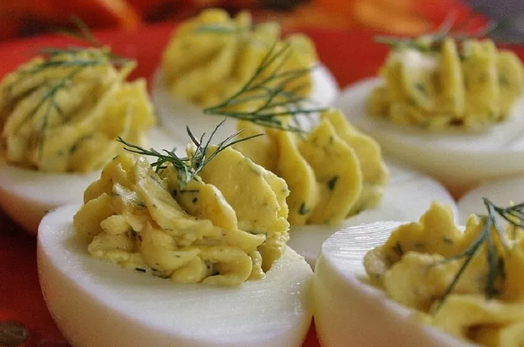

Classic Savory Deviled Eggs

These classic deviled eggs are delightful.
They're stuffed with a creamy blend of mayonnaise, Dijon mustard, and vinegar.
I like to add garlic powder and garnish them with fresh dill.
Ingredients:
- 6 hard-cooked eggs, halved
- ¼ cup mayonnaise
- 1 teaspoon rice wine vinegar
- 1 teaspoon Dijon mustard
- ½ teaspoon chopped fresh dill (Optional)
- ¼ teaspoon garlic powder
- ⅛ teaspoon salt
- 12 sprigs fresh dill (Optional)
Directions:
- Gather all ingredients.
- Scoop egg yolks into a bowl and set egg whites aside.
- Add mayonnaise, vinegar, mustard, 1/2 teaspoon chopped dill, garlic powder, and salt to the egg yolks; mash well until smooth.
- Spoon or pipe yolk mixture into egg whites. Garnish with dill sprigs. Refrigerate until ready to serve.